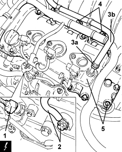

1016A30 LEFT TAPPET COVER - R.R. AND REPLACE GASKET
- Path
- Procedures > 10 ENGINE > 1016 CYLINDER HEAD/S > 1016A TAPPET COVERS > 1016A30 LEFT TAPPET COVER - R.R. AND REPLACE GASKET
- Kind
- repair procedure (removal / refitting; the operation number is the code)
- Applies to
- engines: 3.2 JTS; all production periods
- Interactive page
- https://sloeber94.github.io/elrnDB-aBrrSpdr/en/#/946001812
Applies to: engines: 3.2 JTS; all production periods
 Removing
Removing
 Refitting
RefittingOp. 1016A10 SOUND-PROOFING COVER - R.R
Op. 5510C16 LEFT CYLINDER HEAD IGNITION COIL - R+R
1. Disconnect the electrical connection for the air temperature sensor.
Description | Connector | |
|---|---|---|
1 | Engine coolant temperature sensor/sender unit |
2. Undo the bolt fixing the earth lead to the left cylinder head.
3. Loosen the band (3a), disconnect the oil vapour pipe (3b) from the tappet cover and move it to one side.
4. Undo the bolts fixing the engine wiring retaining bracket.
- Release the engine wiring from the intermediate fastenings.
5. Undo the bolts and remove the left cylinder head tappet cover.

Applies to: engines: 3.2 JTS; all production periods
Refitting
Removing- Place the left cylinder head tappet cover in position and tighten the bolts to the recommended torque.
Component | Fastening | dia | Value (daNm) | Validity |
|---|---|---|---|---|
Tappet cover | Bolt | - | 1.0 | 3.2 JTS |
- Connect the engine wiring to the intermediate fastenings.
- Tighten the bolts fixing the engine wiring retaining bracket.
- Place the oil vapour pipe in position and connect it to the tappet cover using the band.
- Tighten the bolt fixing the earth lead to the left cylinder head.
- Connect the electrical connection for the coolant temperature sensor.
Topics linked from this page (3)
- 1016A10 SOUND-PROOFING COVER - R.R
- 5510C16 LEFT CYLINDER HEAD IGNITION COIL - R+R
- K036 ENGINE COOLANT TEMPERATURE SENSOR/SENDER UNIT